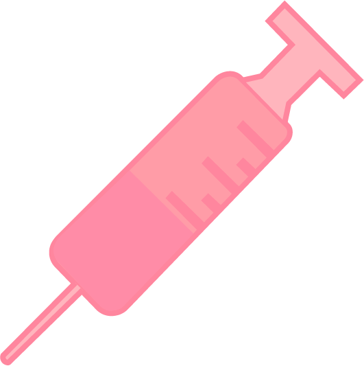
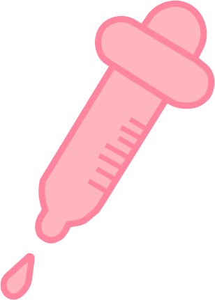
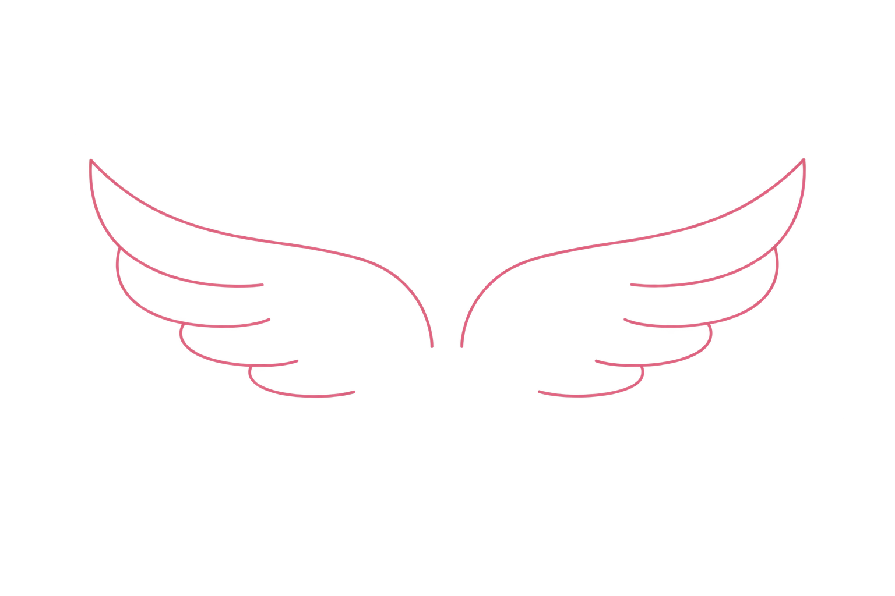

in deze nieuwe blog van mij gaan we het hebben over hoe het internet beauty standaarden veranderd. Misschien heb je het al door maar de laatste paar jaren heeft sociale media een grote rol in het veranderen van schoonheidsstandaarden.
Zo is bijvoorbeeld looksmaxxing nu heel populair. Volgens mij valt dit vooral onder de jongens. Het idee achter looksmaxxing is dat jongens hun looks maximaal maken als in dat ze zo veel mogelijk hun best doen om er zo mooi mogelijk uit te zien. Je vraagt je misschien nu af: Emma, wat is er erg aan dat jongens er mooi proberen uit te zien? Het probleem met looksmaxxing is dat de beelden die je online ziet niet haalbaar zijn. Ook worden er voorbeelden gegeven over hoe je kan lookmaxxen, een daarvan is jezelf letterlijk in elkaar meppen met een hamer met de naam ‘bonesmashing’. Hiermee proberen jongens hun gezichtsstructuur te veranderen. Dit is natuurlijk heel gevaarlijk en slaat helemaal nergens op!

Je wordt dus een soort van gebrainwashed (zo zie ik het in ieder geval). Hetzelfde geld voor de meiden. Die ene ster die jij online ziet zonder rimpels, met perfecte huid en volle lippen is helemaal niet naturel. Veel sterren doen aan plastische chirurgie en botox of dragen veel make-up. Het internet heeft hier veel invloed op. Door het internet veranderen de standaarden die voor schoonheid gezet worden heel snel.
Als voorbeeld neem ik dat vroeger (als in de jaren 60) de schoonheidsstandaarden waren dat je wat meer vet aan je lichaam had. Met wat meer vet bedoel ik hetgene wat we nu “dik” zouden noemen (waar ik het totaal niet mee eens ben!). Nu moet iedereen zo dun zijn als een velletje papier maar let op! Je mag ook niet te dun zijn want dat is ook niet goed. Ondertussen zien we alle sterren online die aan ozempic doen om zo dun mogelijk te blijven (weer een onhaalbaar en gevaarlijk beeld). Je kan met ozempic al snel te dun worden (wat naar mijn aanzien er niet heel gezond uit ziet). Alle jonge meiden (en uberhaupt meiden) zien dit beeld en denken dan dat dit normale standaarden zijn. Dat zijn ze natuurlijk niet!

Conclusie: niet alles wat je online ziet is echt, de beauty standaarden veranderen snel door vooral sociale media en het kan zelfs gevaarlijk worden om de nieuwe standaarden te volgen. Ik probeer jullie met deze post bewust te maken met de standaarden die online gezet worden (voor hoever dat kan). Daarom geef ik jullie nu ook een aantal voorbeelden die zich op het moment uitspelen.
Maar wat als er iets aan dit probleem gedaan kan worden. Ik denk dat als er guidelines komen voor vooral verschillende leeftijden, dat er veel minder mensen zo erg insecure zouden zijn. Ik denk hierbij aan bijvoorbeeld fact check knopjes of waarschuwingen over dat niet alles wat je online ziet echt is. Een soort van balk die je ook krijgt als je bijvoorbeeld op TikTok iets over covid ziet alleen dan staat er iets over fake media. Sowieso vind ik het een goed idee om wat aardiger tegenover elkaar te zijn en wat meer open over onzekerheden en dingen als sterren die botox en filters hebben. Ik vind dat dit soort dingen vooral met jonge meiden en jongens besproken moet worden zodat je van jongs af aan al leert dat niet alles online echt is.
Dus girlies, guys en gays, geloof niet alles wat je online ziet want niet alles is echt. Wees please tevreden met wat je ziet en denk eraan dat mensen alleen over zichzelf denken. Het boeit mensen niet zoveel hoe jij eruitziet als dat je denkt (in a good way) en iedereen is sowieso mooi op zijn of haar eigen manier.
Stay safe en Emma out
xoxo
